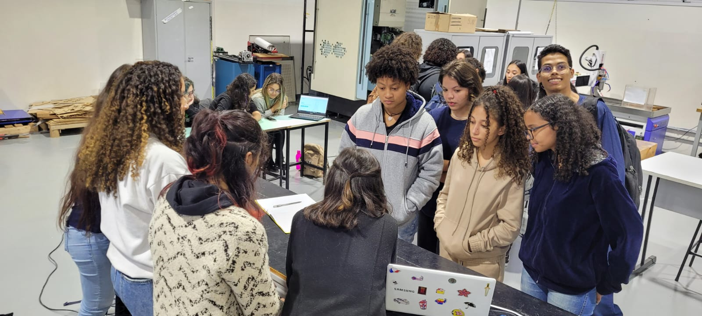

Sobre o Projeto
Nosso Projeto
Como o SupportingWomen surgiu?
Após conversas em grupo identificamos através de pesquisas que grande parte das mulheres que sofrem qualquer tipo de violência não emitem uma denúncia, tenha ela sofrido há anos ou recentemente. Isso se dá por diversos motivos, entre eles o grande medo das ameaças que sofrem, a possível dependência financeira e também manipulação e distorção de fatos por parte do seu parceiro. Com uma análise dos aplicativos/projetos existentes no mercado, nós notamos a falta de um aplicativo que oferecesse suporte ao período de término de um relacionamento abusivo, diferentemente dos aplicativos que fornecem meios onde a mulher pode denunciar seu agressor, que existem em grande quantidade.
O que é o SupportingWomen?
SupportingWomen é um projeto que visa oferecer para a mulher que sofre ou sofreu violência de gênero informações importantes para que ela consiga passar por essa situação de uma forma que se sinta segura e acolhida. Tais informações serão disponibilizadas em duas plataformas diferentes: uma página informativa na internet e um aplicativo. O aplicativo, nossa prioridade, tem a funcionalidade principal de fazer com que a mulher consiga ter acesso ao apoio necessário após ter experienciado uma relação abusiva, disponibilizando um mapa com locais como hospitais, delegacias, centros de referência da mulher, entre outros. Para saber mais sobre o app, clique em “O aplicativo” para saber todas as funcionalidades.
Quais são os resultados que esperamos com o projeto?
Tendo em vista as metas estipuladas, espera-se como resultado um aplicativo desenvolvido que ajude a mulher a se retirar de um relacionamento abusivo de uma maneira mais segura e acolhida, inicialmente o app estará disponível para o sistema operacional Android e, confiamos que, futuramente englobe todos os sistemas operacionais para dar acesso/oportunidade a cada vez mais mulheres. Também é esperado que com a criação de uma página informativa na Internet, que contenha todas as informações relevantes para o tema, todas as mulheres possam conhecer e identificar relacionamentos abusivos. Como consequência disso, desejamos aumentar os índices de denúncias dos casos de violência de gênero e transformar esse momento traumático da vida da vítima no mais confortável e afável possível.
Fotos do projeto

